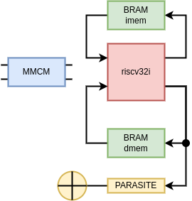

Before the resource utilisation table can be extracted, a number of things need to be taken care of first.
The two most important signals are clock. Without this signals there can be no synchronous design. In an FPGA this signal is taken care of very well to such extend that it even has its own routing network. To allow a signal access to this clocking network, dedicated buffers are available (e.g. BUFG, BUFR, BUFH). An in-depth overview of clocking in an AMD FGPA can be found in the user guides (e.g. ug472 for 7-series).
A good approach to clocking the FPGA is by using a mixed-mode clock manager (MMCM). The MMCM is a device primitive that takes in an external clock source and reset. It internally generates a feedback clock which can be parameterised. The internal design of the MMCM uses this feedback clock to tune itself to obtain a set frequency. With this internal configuration, other (up to 7!!) internal clock signals can be generated.
The MMCM generates a signal when an internal lock is achieved. This indicates that the output clocks are stable. If this signal is synchronised (e.g. by using a shift register) and inverted, this signal can be used as an internal, synchronous, active-high reset.
Note that two clock buffers are required in this design.
The frequency of the internal clock (fclkout0) can be set using the frequnecy of the input clock (fclkin). There is a master division operation (Dmaster) and a master multiplication operation (Mmaster) that are applied for all clocks. These parameters shape the frequency of the VCO and must be between 600MHz to 1200MHz (for an FPGA with speed grade -1).
Additionaly, for each output clock of the MMCM, three parameters can be set: the duty cycyle, a specific phase shift and a specific divisor (Dclkout0). On the PYNQ-Z2 board, the following parameters would result in a 40 MHz clock:
An example of the VHDL code for the MMCM wrapper can be found here.
To implement both the instruction and the data memory another device primitive will be used: the block RAM (BRAM). An FPGA typically has a number of dedicated memories that can be tailored to fit the design’s need. More info on this primitive can be found in the user guides (e.g. ug473). For a 7-series FPGA, a BRAM is 36 kb(it!) in size. Also, these BRAMs are dual-ported. This means that there are two access ports to the same memory space. The 36 kb memory consists of 32 kb memory for data an 4kb for parity (out of scope for this course). One of the allowed proportions for this 32kb of memory is a width of 32 bits and a depth of 1024 addresses or a 1024x32-bit memory. In the previous chapter an instruction memory (and data memory) of 2048x32-bit were expected, however. This can be made by using two BRAMs.
This image shows how two 1024x32-bit memories are combined to make one 2048x32-bit memory. The glue logic that is required needs to be repeated for the second port (port B).
The interface to this memory is the typical quartet: data in (din), address (addr), write enable (we) and data out (dout).
A final remark on these BRAMs is that they need at least 1 clock cycle to produce the requested data on the output.
An example of the VHDL code for the BRAM wrapper can be found here.
A processor without a program that can be ran, is pointless. The memories that are wrapped here, should therefor be initialised. In the previous chapter, the non-synthesisable part of the testbench wrote this initialisation during reset. This is not a viable approach to use on the hardware. To intialised the BRAMs, they have a long list of generecic that can be mapped to initialised values.
INIT_00 => X"0000000000000000000000000000000000000000000000000000000000000000",
INIT_01 => X"0000000000000000000000000000000000000000000000000000000000000000",
...
INIT_3F => X"0000000000000000000000000000000000000000000000000000000000000000",
The advantage of this approach is that it is simulatable AND synthesisable. The drawback of this approach is that a new .vhd file needs to be written for each change on the software code.
Luckily are proficient in writing software that can make this happen auto-magic-ally. Here is an example of a Python script that takes a template file and a hex file and generates a freshly baked vhdl file that has an initialised BRAM. In this example, the template file contains two pointers at which the initialisation should be written.
The execution of such a script can be done through the Makefile.
Knitting all of this together is left as an exercise.

With the wrapped-up clock and reset signals, the wrapped-up memories, and the RISC-V processor, it time to wrap things together. The processor itself is written in synthesisable HDL. Both used primitives and the small wrapping code are also synthesisable. Therefore, this resulting design can be put on FPGA.
As you might have spotted already, there is no IO available in this implementation. A quick-and-dirty solution could be to simply add LEDs. Tapping on the data that goes to the data memory could be a way to sneak out data. Adding a simple bit of VHDL code could leverage this:
PREG_LEDS: process(clock)
begin
if rising_edge(clock) then
if reset = '1' then
leds <= "0000";
else
if dmem_we = '1' and dmem_a = x"80000000" then
leds <= dmem_di(3 downto 0);
end if;
end if;
end if;
end process;
One essential file that is required still is the constraint file. This is file that ties input and outputs to dedicated pins of the FPGA. It might be that the file extension .xdc rings a bell.
As there are only 2 inputs and 4 outputs, the xdc to implement the wrapped design on a PYNQ-Z2 looks like shown here.
# Clock signal 125 MHz
set_property -dict { PACKAGE_PIN H16 IOSTANDARD LVCMOS33 } [get_ports { sys_clock }];
create_clock -add -name sys_clk_pin -period 8.00 -waveform {0 4} [get_ports { sys_clock }];
# LEDs
set_property -dict { PACKAGE_PIN R14 IOSTANDARD LVCMOS33 } [get_ports { gpio_leds[0] }];
set_property -dict { PACKAGE_PIN P14 IOSTANDARD LVCMOS33 } [get_ports { gpio_leds[1] }];
set_property -dict { PACKAGE_PIN N16 IOSTANDARD LVCMOS33 } [get_ports { gpio_leds[2] }];
set_property -dict { PACKAGE_PIN M14 IOSTANDARD LVCMOS33 } [get_ports { gpio_leds[3] }];
# Buttons
set_property -dict { PACKAGE_PIN L19 IOSTANDARD LVCMOS33 } [get_ports { sys_reset }]; #IO_L9P_T1_DQS_AD3P_35 Sch=btn[3]